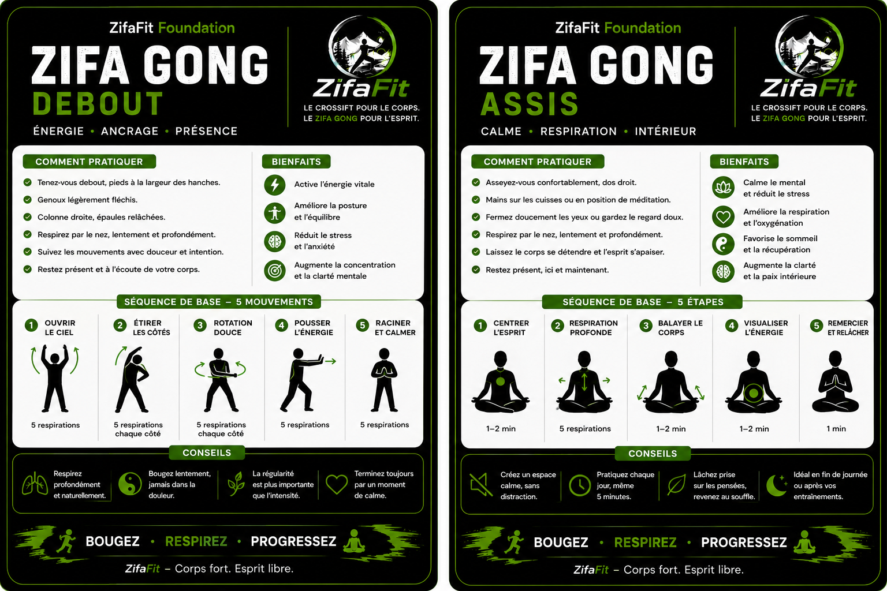

01
Zifa Gong debout
Énergie, ancrage et présence.
- Améliore la posture et l’équilibre
- Réduit le stress et l’anxiété
- Développe la concentration
- Mobilise doucement tout le corps
LE DEUXIÈME PILIER DE ZIFAFIT
Après l’effort, place au souffle, à la mobilité et au calme. Le Zifa Gong complète chaque entraînement ZifaFit.
RESPIRER • S’ANCRER • RÉCUPÉRER
Debout pour retrouver l’énergie et la présence. Assis pour calmer le mental, approfondir la respiration et terminer la journée ou l’entraînement avec douceur.
Énergie, ancrage et présence.
Calme, respiration et intériorité.
POURQUOI L’INTÉGRER
CARTES OFFICIELLES ZIFAFIT
Ces deux cartes résument les positions, les bienfaits et une séquence simple pour commencer à pratiquer debout ou assis.

« La régularité est plus importante que l’intensité. »
Bougez. Respirez. Progressez.